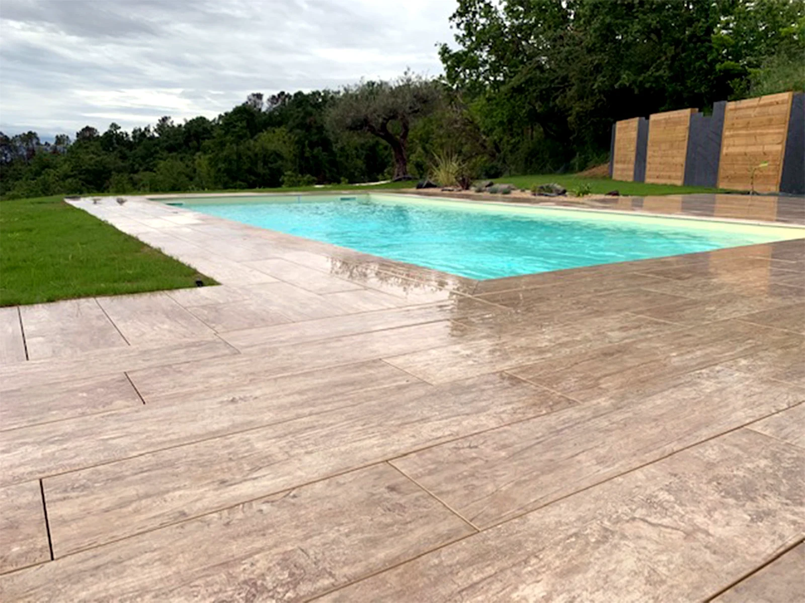
Terrasses de plain-pied, revêtements antidérapants et plantations pensées pour vivre pleinement les abords de la piscine.

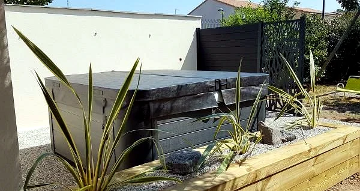
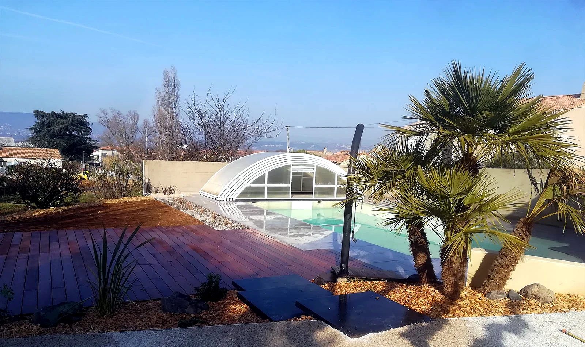
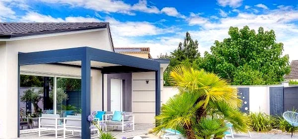
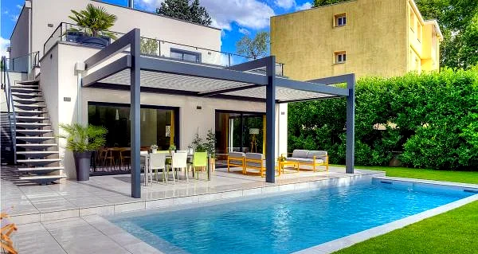
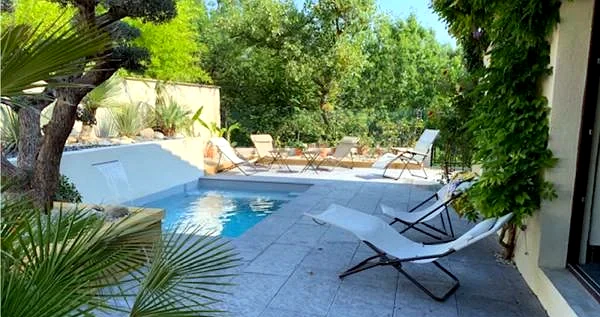
Essences classe 4 et bois composite, posés sur structure adaptée au terrain pour une terrasse durable.

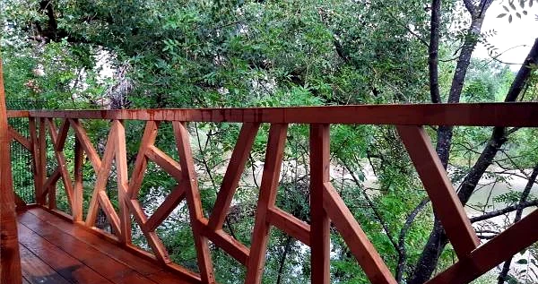
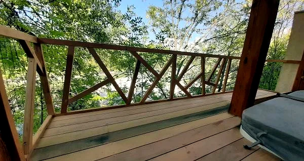
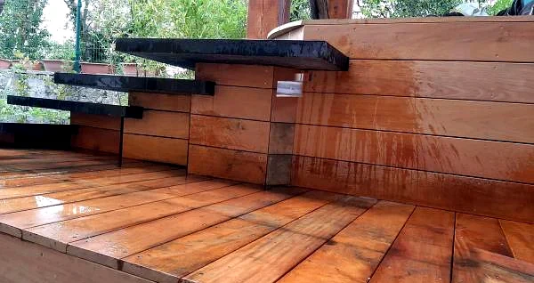
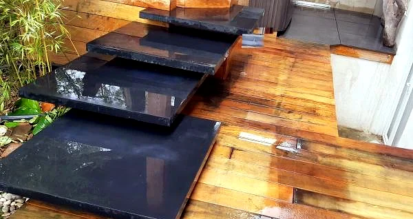
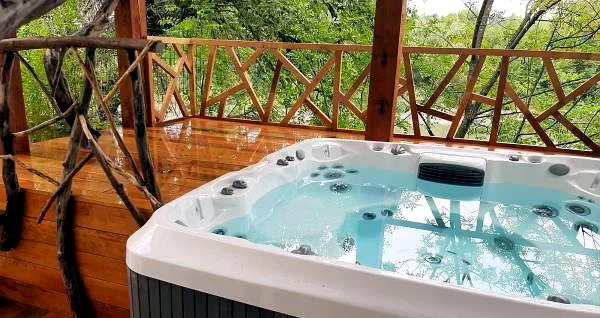
Une base technique solide et un habillage soigné pour intégrer spa ou jacuzzi dans le jardin.

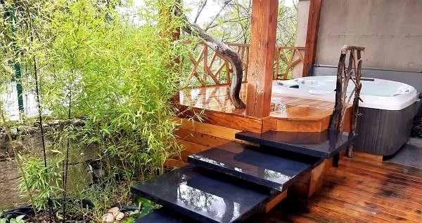
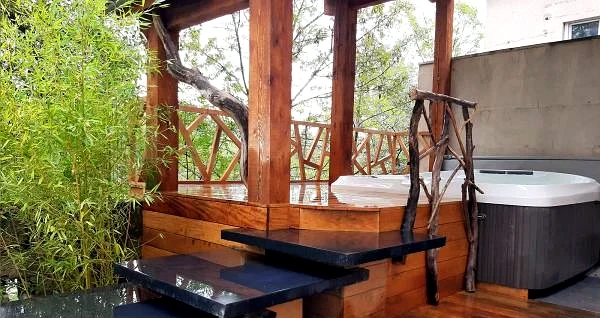
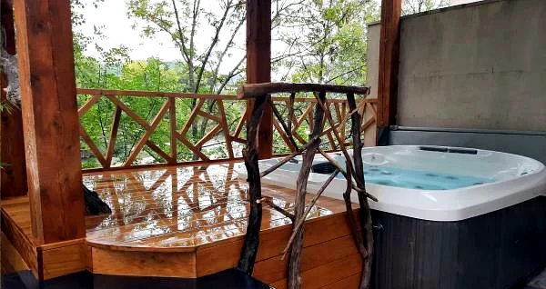
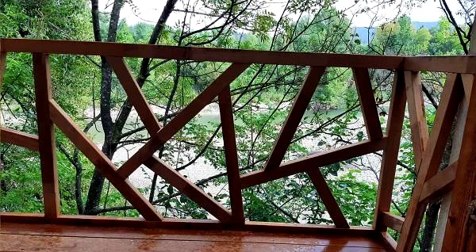
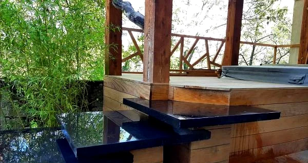
Dallage, pavés ou béton désactivé, choisis selon l'usage et la circulation, pour des sols extérieurs durables.

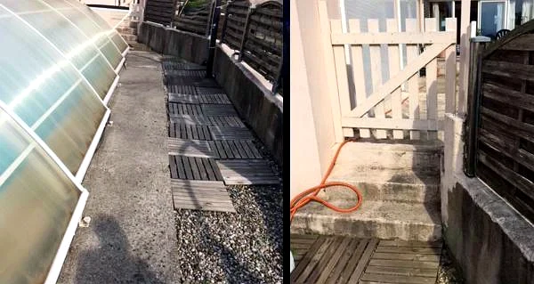
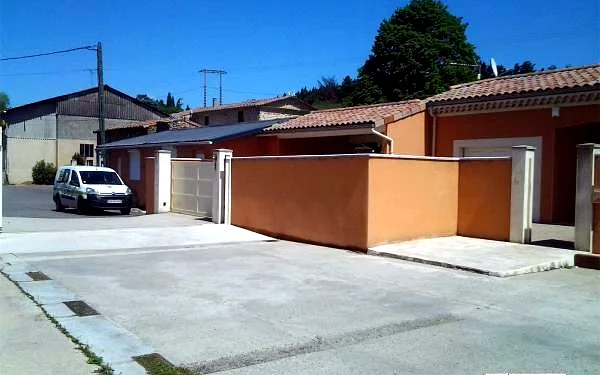
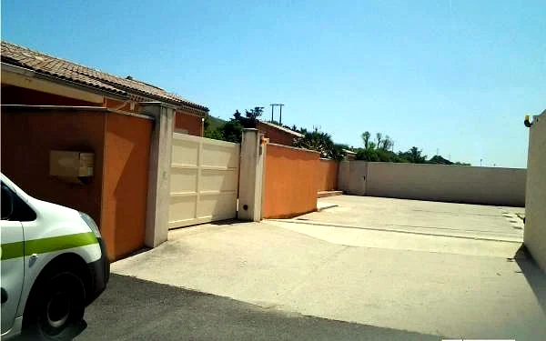
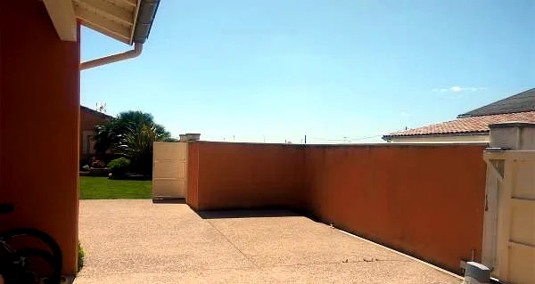
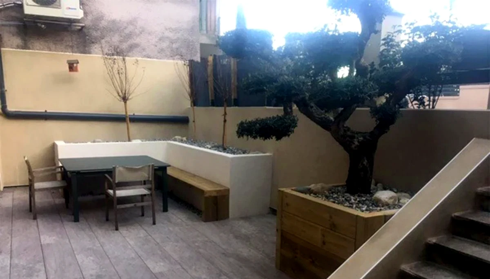
Gazon naturel ou synthétique, massifs et haies sélectionnés selon l'exposition et le climat local.


Clôtures bois, composite ou occultantes, pour l'intimité et l'esthétique de votre extérieur.
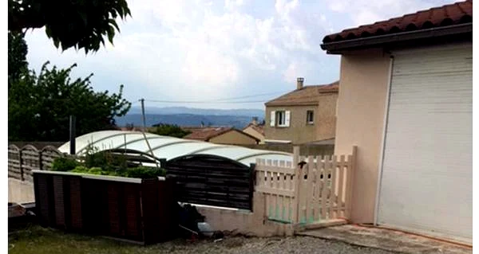
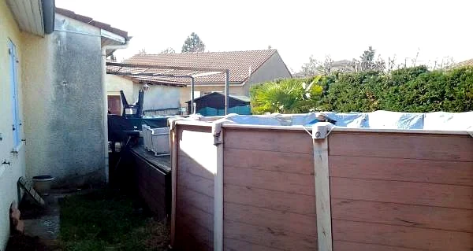
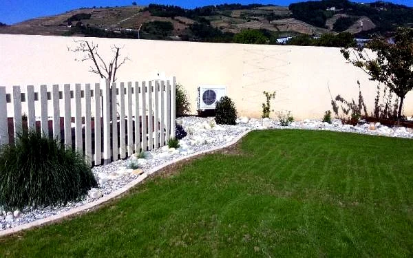

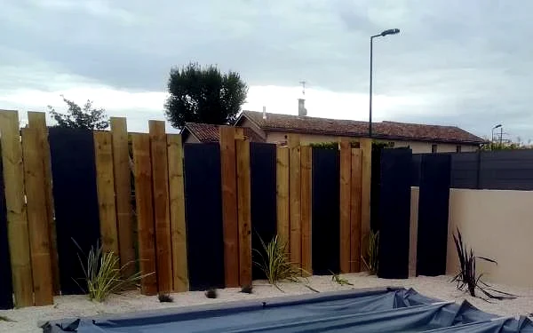
Bassins, cascades et passerelles intégrés harmonieusement à l'aménagement paysager.

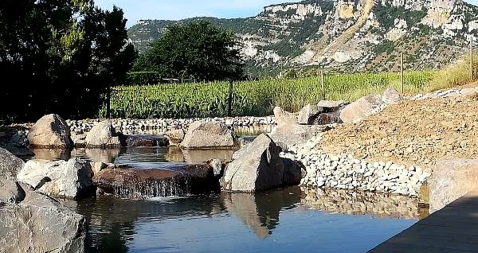
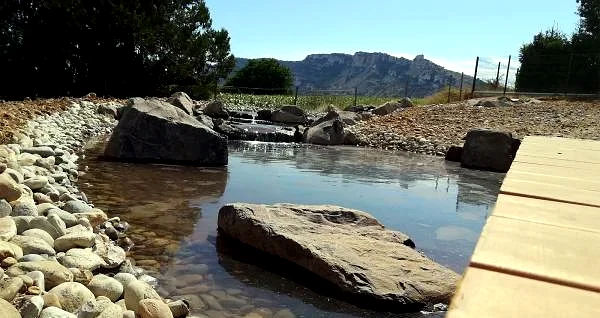
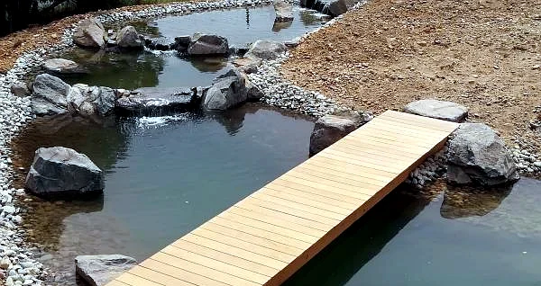
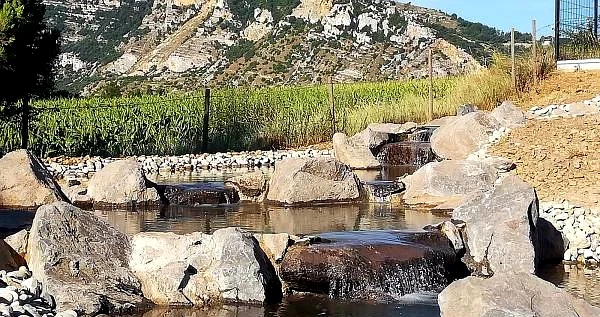
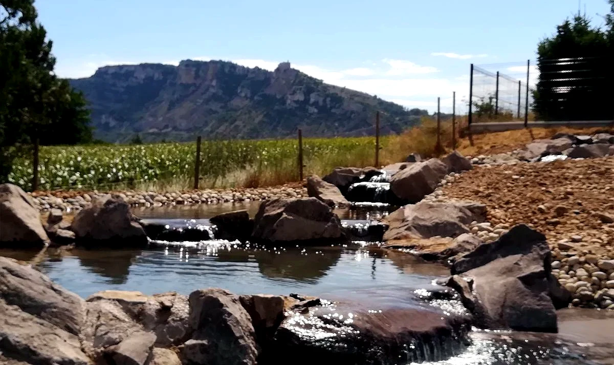
La transformation de vos extérieurs, du terrain brut à l'espace de vie fini.
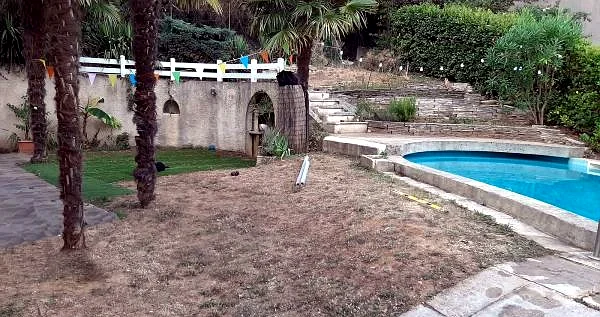
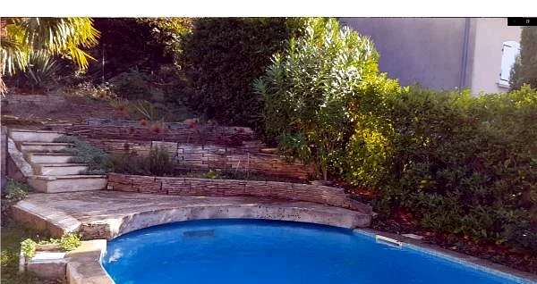
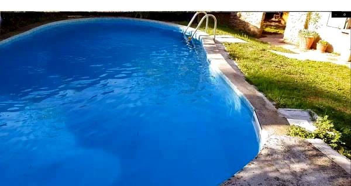
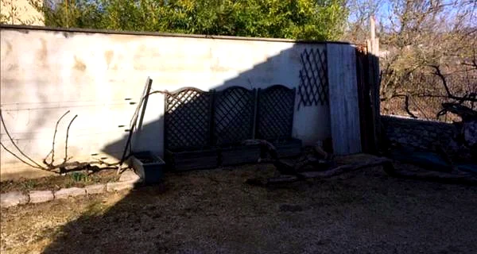